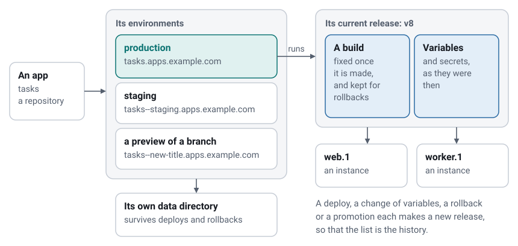
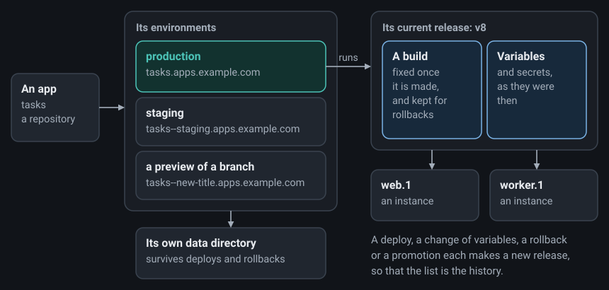

Concepts
Apps, environments, builds, releases, instances, gates, projects and roles: the words everything else uses.
On this page
The words the rest of this documentation uses, and how the things they name fit together.


The server#
The server is the moor program, run as a service on one machine. It keeps its state in one SQLite database and one data directory, and answers every app's hostname itself. There is nothing else to install, and no cluster: Moorage is one machine, done well. The same program is also the command line you use from your own computer, which talks to the server through its API. The web console is part of the server, and shares its code with the API.
Apps#
An app is what you deploy, usually one repository. Its name becomes part of its address: tasks is served at tasks.apps.example.com. Its moorage.toml, the manifest, says how to build and run it, and is optional when Moorage can work that out for itself.
Environments#
An environment is a place where an app runs, with its own address, variables, data directory and releases.
| What it is | Address | |
|---|---|---|
| Production | What the app is for. Every app has it | tasks.apps.example.com |
| A named environment | A place that stays, such as staging | tasks--staging.apps.example.com |
| A preview | A branch, made by pushing it, and gone when it goes | tasks--new-title.apps.example.com |
Previews and environments has the details.
Builds, releases and deployments#
A build is what comes out of building one version of the source: a directory, or a container image. It does not change afterwards.
A release is a build and a set of variables, numbered v1, v2 and so on in each environment. Whatever changes what runs makes a new one: a deploy, a change of variables, a rollback or a promotion. So the list of releases is the history of what an environment ran, and going back to any of them takes a moment.
A deployment is the job that makes a release: build, or take a build there is already, run the release command, and roll it out. It succeeds or fails, and if it fails, the release before it goes on serving. See Releases, rollbacks and scaling.
Processes and instances#
A process is a kind of thing an app runs, named in its manifest. web gets the app's traffic, and an app may also have others, such as worker, that do not. An instance is one running copy of a process. Each is watched by a small supervisor that restarts it if it fails, and that keeps it running while the server itself restarts or is upgraded.
A static site has no processes at all: Moorage serves its files.
A cron job and a one-off command run as short-lived instances of the current release, with its variables and data (more).
Variables and secrets#
Variables are what an app is configured with, kept on the server and given to it as its environment. A secret is a variable sealed with the server's master key, which is handed to the app in memory and is not shown again (more). Changing either makes a new release, unless you ask to keep the change for the next deploy.
Data#
The data directory of an environment survives deploys, and is at $MOORAGE_DATA_DIR. Everything else about a release is read-only once built, which is why an app's own files belong in that directory (more). It suits a SQLite database, with a dump for backups. For anything else, Moorage can run PostgreSQL or object storage for an app, or you can reach your own through a variable, such as DATABASE_URL.
Gates#
A gate says who can reach an environment: anyone, whoever has a password, people signed in, or only those with a share link. It can also be limited to a list of addresses (more).
Projects, roles and tokens#
Every app belongs to one project, and people have a role in a project:
| Role | What it adds |
|---|---|
| Viewer | Sees apps, status and metrics, and usually logs |
| Deployer | Deploys, restarts, rolls back, promotes, scales, and makes previews and share links |
| Maintainer | Changes variables, secrets, domains and gates, and members; deletes apps |
| Administrator | Everything on the server: settings, users, every project, and the audit log. This one is a role on the server, and not in a project |
An API token lets a script act as you, within the scope you give it: read, deploy, admin or gate. It can also be limited to one app, and made to expire (more).
Deploying is running code on the server, so treat it like shell access: Security says what that means.
Runtimes and drivers#
A runtime is how an app is built and started: Go, Python, Node.js, static, a command of your own, a Containerfile, or an image. Moorage detects the common ones. Most run as ordinary processes on the server, and those in containers run under Podman or Docker. Nothing else needs an engine.
Toolchains are what the native runtimes are built with: Go, Node.js, uv and Python. Moorage downloads each one the first time an app asks for it, checks it, and keeps it per version, so that every app gets the version it asked for.